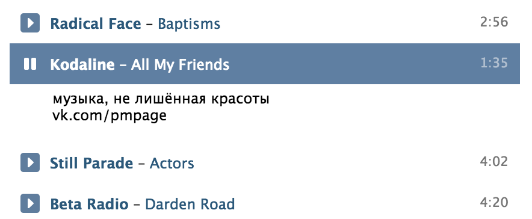

<!DOCTYPE html>
<html ng-app="aimprApp"></html>
<head>
  <title>Audio Improver</title>
  <script src="//vk.com/js/api/xd_connection.js?2"></script>
  <script src="libs/js/index.js"></script>
  <script src="libs/js/spin.js"></script>
  <script src="libs/js/ladda.min.js"></script>
  <script src="libs/js/jquery.js"></script>
  <script src="libs/js/angular.js"></script>
  <script src="libs/js/angular-animate.js"></script>
  <script src="libs/js/angular-route.js"></script>
  <script src="libs/js/truncate.js"></script>
  <script src="libs/js/elastic.js"></script>
  <script src="libs/js/ngStorage.js"></script>
  <script src="libs/js/angular-notify.js"></script>
  <script src="libs/js/q.js"></script>
  <script src="templates.js"></script>
  <script src="app.js"></script>
  <link rel="stylesheet" href="libs/css/bootstrap.min.css">
  <link rel="stylesheet" href="libs/css/angular-notify.css">
  <link rel="stylesheet" href="libs/css/ladda.min.css">
  <link rel="stylesheet" href="app.css">
</head>
<body>
  <div class="container-fluid aimpr">
    <div ng-controller="InfoCtrl" ng-include="&quot;views/info.html&quot;" class="row app-header"></div>
    <div class="row app-body">
      <div ng-controller="TracksCtrl" ng-include="&quot;views/tracks.html&quot;" class="col-xs-9 tracklist-wrapper"></div>
      <div ng-controller="FriendsCtrl" ng-include="&quot;views/friends.html&quot;" class="col-xs-3"></div>
    </div>
    <div id="wtf" data-modal-effect="fadescale" class="yo-modal">
      <div class="yo-modal-content">
        <div class="yo-modal-content-header"><span>Что это и зачем?</span></div>
        <p>&nbsp;&nbsp;&nbsp;&nbsp;Слушая музыку ВК частенько хочется посмотрть текст песни, но некоторые люди вместо текста песни пихают туда <b>спам</b> или текста вообще нет.</p>
        <p></p>
        <p>&nbsp;&nbsp;&nbsp;&nbsp;И приходится искать текст песни вручную. С помощью этого аппа, <b>нажав одну кнопочку</b>, можно обновить все тексты песен в вашем списке аудиозаписей (если они, конечно, найдутся в сети).</p><a href="#" class="btn btn-success yo-modal-close">оке</a>
      </div>
    </div>
  </div>
</body>